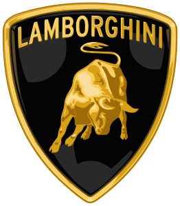
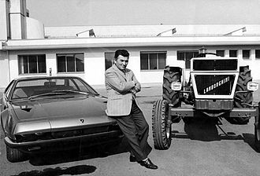
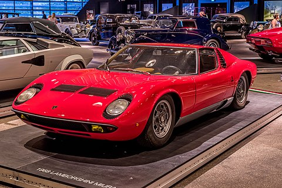

Automobili Lamborghini je italijansko podjetje za proizvodnjo avtomobilov, ki ga je 7. maja 1963 ustanovil Ferruccio Lamborghini, nekdanji ustanovitelj Lamborghini Trattori. Sedež in edini proizvodni obrat se že od nekdaj nahaja v Sant'Agata Bolognese, kjer dela več kot 1900 zaposlenih.
Trattori Lamborghini, ustanovljeni leta 1948 po zaslugi dela Ferruccia Lamborghinija, se niso ponašali s starodavno tradicijo zgodovinskih proizvajalcev, kot sta Fiat Trattori in Landini, in za njihove prve stvaritve so uporabili zapuščen vojni material. Z uporabo motorjev in diferencialov iz tovornjakov in vojaških vozil, izterjanih iz centrov ARAR (Residue Alienation Survey Company), so bili postavljeni prvi traktorji »Carioca« s pomembno tehnično inovacijo, ki omogoča traktorju zagnati na bencin in nato delovati na olje. V samo nekaj letih se je proizvodnja podjetja povečala z enega traktorja na teden na okoli 200 na leto, novi motorji italijanske izdelave pa so nadomestili stare vojne presežke. Leta 1951 se je rodil »L 33«, prvi serijsko izdelan traktor znamke Lamborghini z izjemo motorja: 6-valjni vrstni bencinski motor Morris.

Temeljni začetki podjetja Avtomobili Lamborghini sledijo resničnemu sporu med Enzom Ferrarijem in Ferrucciem Lamborghinijem. Slednji, že uveljavljen industrialec, ki je izdeloval traktorje je imel v lasti Ferrarija 250 GT, s katerim ni bil povsem zadovoljen. Sam se je obrnil na podjetje, da bi se potožil zaradi nepravilnega delovanja menjalnika in mu dal nasvet, toda Enzo Ferrari, ponosno jezen, da ga stranka želi naučiti obrti, mu je dejal: "Kaj želite vedeti o avtomobilih, vi ki voziti traktorje?" Kot odločen odgovor se je Lamborghini odločil, da bo začel izdelovati lastni avtomobil.
Podjetje Avtomobili Lamborghini je bilo ustanovljeno 7. maja 1963 in je imelo sedež v namensko zgrajeni tovarni v Sant'Agata Bolognese. Lastnik, ki je imel ogromna finančna sredstva, se je takoj obdal z zelo sposobnimi inženirji in tehniki. Prvi avtomobil so poimenovali 350 GTV, ki pa je zaradi preveč futurističnega sloga imel neuspeh in je ostal edinstven primerek. Projekt je bil nato zaupan milanskemu izdelovalcu karoserije Touring, ki je ob upoštevanju začetnih značilnosti ustvaril bolj klasičen desain. Novi avtomobil, imenovan 350 GT, je bil hiter in eleganten dvosedežni granturismo in je bil prvi avtomobil, ki ga je Lamborghini serijsko izdeloval. Imel je zmeren prodajni uspeh in sledila sta mu 400 GT in 400 GT 2+2, oba predstavljena leta 1966.
Ferruccio Lamborghini med lastnima izdelkoma
Medtem hitro raščo podjetja sta Dallara in Stanzani razvila vzporedni projekt: Miura. Ta razkošni avtomobil z motorjem zadaj je bil paradoksalno pravo nasprotje tega, kar je Lamborghini zahteval od svojih oblikovalcev: super avtomobil, pod pogojem, da je zanesljiv. Imel je izjemen uspeh, tako pri kritikih kot pri prodaji, tako da je v svojih različicah ostala v proizvodnji od leta 1966 do leta 1973. Miura je bila tudi avto, ki je začel dolgoletno partnerstvo z oblikovalcem Bertonejem, na katerega se je Lamborghini zanašal po zaprtju Touringa. Podjetje nikoli ni imela svoje testne steze in testi so vedno potekali na javnih cestah.

Kasneje se je Lamborghinijeva linija klasičnih avtomobilov nadaljevala in v letu 1968 sta bila predstavljena tako zamenjava za 400 GT, Islero in Espada velik športni kupe s štirimi udobnimi sedeži, katerega filozofija je bila vnaprej oblikovana že iz Prototip Marzal. Nekaj let po ustanovitvi je Lamborghini že lahko računal na celotno paleto športnih avtomobilov, vendar je bila usoda podjetja večinoma v rokah Miure, ki je monopolizirala prodajo: leta '68 je bilo prodanih 187 v primerjavi s samo 37 Espadami in zelo majhnim številom Islerosov.
Medtem ko se je prodaja Espade izboljšala in prodaja Miure napredovala, je leta 1970 Islera zamenjal avtomobil Jarama, še en kupe, katerega oglata linija je popolnoma spremenila register od svojega predhodnika. Leta 1970 je bil predstavljen tudi Urraco, ki je zadaj vgradil motor V8 s prostornino le 2,5 litra. Urraco je predstavljal poskus širitve na manj ekskluzivno tržno področje in s tem povečanje skromnih proizvodnih kvot, ki jih dovoljujejo tako dragi avtomobili. Naslednje leto je bil predstavljen avtomobil, ki naj bi nadomestil Miuro: imenoval se je Countach in njegova linija, še bolj ekstremna in radikalna, je bila prav tako delo Gandinija. Vendar pa Countach, tudi zaradi nadaljevanja zadovoljivih rezultatov Miure, ni prišel na trg pred letom 1974. To je bil prvi Lamborghini, izdelan brez ustanovitelja.
Lamborghini Miura
Ferruccio Lamborghini je leta 1972 nenadoma zapustil svoje podjetje in odstopil večino delnic švicarskemu podjetniku Georgesu-Henriju Rossettiju, nato pa leta 1973 prodal preostali paket Renéju Leimerju. Razlog za tako nepričakovano odločitev je bila potreba po zbiranju sredstev za tovarna traktorjev v težavah, verjetno pa se je skrivalo tudi v nezadovoljstvu, ki ga je Lamborghini čutil do sindikalnih nemirov, ki so bili že nekaj časa razširjeni v večini italijanskih tovarn. Te trditve so poleg tega, da so upočasnile proizvodnjo in vplivale na kakovost izdelkov, verjetno spodkopale Lamborghinijev podjetniški entuziazem. V nekaj letih je namreč prodal tudi drugo premoženje in se umaknil v zasebno življenje.
Sprememba vodstva je ustrezala prvim resnim gospodarskim težavam, ki jih določa vsota vzrokov: odhod Miure, ko Countach še ni bil pripravljen, naftna kriza leta 1973, ki je prepovedala športne avtomobile, in končno lastništvo Švicarke družbe, ki je bila pogosto odsotna. Vodenje podjetja je bilo zaupano Ubaldu Sgarziju ki je bil kot komercialni direktor. Pomanjkanje sredstev je povzročilo pomanjkanje financiranja zanimivih projektov, kot je Bravo, ki bi lahko oživil prodajo. Tako sta leta '74 tudi Stanzani in Wallace zapustila Lamborghini. Sledila so težka leta z zastarelo in slabo razvito ponudbo ter edinim zelo cenjenim Countachom, ki je ekonomsko podpiral bogastvo tovarne. Šele leta 1976 je bil predstavljen prvi Lamborghinijev serijski kabriolet, Silhouette, ki je prevzel mehaniko Urraca.
Zdelo se je, da je rešitev ugoden dogovor o izdelavi 800 primerkov športnega kupeja M1 v imenu BMW, ki bi dobavil motorje, izboljšal bogastvo podjetja, vendar podjetje s sedežem v Bologni z resnimi primanjkljaji ni moglo spoštovati dobav in dogovor je bil ukinjen. Kmalu zatem so Lamborghiniju predlagali še en obsežen projekt: terensko vozilo, namenjeno ameriški vojski. Na žalost je tudi ta možnost padla v vodo, saj je bil Lamborghinijev prototip, Cheetah, zavržen v korist njegovega konkurenta: Humveeja. Zdelo se je, da obstaja zanimanje Walterja Wolfa, kanadskega milijarderja, ki je prispeval k razvoju Countacha, vendar se ni uresničilo. Avgusta 1978 je bolonjsko sodišče dalo podjetje v administracijo, da bi se izognilo stečaju.
Leta 1979 je podjetje, da bi ublažilo odpuščanja, podpisalo pogodbo s FIAT-om za sestavljanje notranje opreme 5000 "127 Rustica", proizvedenih v Braziliji in namenjenih za evropski trg. Dogovor je povzročil hud sindikalni spor, katerega cilj je bil blokiranje FIAT-ove tuje proizvodnje, v katerega je bila vpletena tudi FULP (Združena zveza pristaniških delavcev), ki je preprečila raztovoritev avtomobilov v pristanišču Livorna.